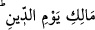

“Mâliki yevmi’d-din” sıfatları ile sanki Allah Teâlâ hazretleri şöyle buyurmaktadır:
“Seni ben yarattım, ilâhın Ben’im. Seni nimetlerle yetiştirdim, Rabbın Ben’im. Sen
isyana düştün, Ben günahlarını setrettim, Rahmân Ben’im. Sen tevbe ettin, Ben de
bağışladım, Rahîm Ben’im. Amellerin karşılığının mutlaka verilmesi lâzımdır, din ve
cezâ gününün sahibi Ben’im.”
et-Te’vîlâtü’n-Necmiyye’de müellif der ki: Din gününün sâhibi ibâresi, gerçek dînin
İslâm olduğuna işârettir. Buna şu âyet delâlet eder: “Allah indinde din, ancak
İslâm’dır” (Âl-i İmrân, 3/19). İslâm’ın iki yönü vardır: Zâhir ve bâtın. Zâhir İslâm dil
ile ikrâr, organlarla ameldir. Bu, İslâm’ın bedene âid olan tarafıdır. Bedenî olan
zulmânîdir. Zulmânîlik, karanlık geceden kinâyedir. Bâtının İslâm’ı ise, Allah’ın nûru
ile kalbin ve göğsün açılıp genişlemesidir. Bu İslâm’ın rûhânî yönüdür, bu da nûrânîdir.
İslâm’ın zâhiri yönü, vücûdun Allah’ın emir ve yasaklarına teslim olmasını gerektirir.
İslâm’ın rûhânî yönü ise, rûhun ve kalbin ezelî ahkâma, ilâhî kader ve kazaya boyun
eğmesini; teslim olmasını gerektirir. İslâm’ın sadece cesede âid olan zâhirî tarafına
bağlı kalarak, rûha âid yönüne ulaşamayan kimse, din konusunda mütereddid ve şaşkın,
gece yolculuğu yapan insana benzer. Bu yüzden pek çok mülkler ve mülk sahibleri
görür. Nitekim çocukluğunda geceleyin dışarı çıkan Halil İbrâhîm (a.s.)’in durumu
böyle idi. Gece karanlığı çöktüğünde bir yıldız gördü ve “İşte benim Rabbım bu” dedi.
Nefs dağının arkasındaki kalbin doğuş yerinden rûhânî İslâm güneşinin doğduğunu gören
ve saâdet sabahına çıkan kimse, Rabbından bir nûr üzeredir. Ve din gününün varlığını
açık olarak görür ve buna inanır. Böylelerinin virdi: “Biz de, mülk de Allah’a âid
olarak sabaha çıktık” şeklinde olur. Böyleleri ayne’l-yakîn, hatta hakka’l-yakîn olarak
mülkün Allah’a âid olduğunu görürler. Din gününün mâlikinden başka hiçbir mülk
sâhibinin bulunmadığını anlarlar. Böyleleri gündüzün aydınlığı tam olarak ortaya çıkıp
gerçek Mâlik zâhir olunca âdetâ Hakk ile yüzyüze konuşmaya başlar ve: “Ancak Sana
kulluk eder, ancak Senden yardım dileriz” derler.
“
” âyetinin ince mânâlarından biri de şudur: O’na muhâlefet topyekün
âlemi harâbeye, mahlûkatı yokluğa çevirir. Melikler melikine nasıl muhâlefet edilebilir
ki?! Nitekim Kur’ân’da: “Nerede ise bundan gökler çatlayacaktı.” (Meryem, 19/90)
buyurulur. O’na itâat, düzene ve devamlılığa sebeb olur. Nitekim Allah Teâlâ: “Seni
rızıklandıran Biziz. Güzel sonuç Allah’dan korkanlara mahsûstur” (Tâhâ, 20/132)
buyurur. Teb’aya düşen meliklere itâat, meliklere düşen de melikler melikine itâattir ki,
bu sûretle nizâm-ı âlem sağlansın.
Bu ibâre ile ilgili şöyle bir nükte daha anlatılır: “Din gününün sahibi” sözü,
Allah’ın melikliğinin kemâlinin adâletle olduğunu açıklamaktadır. Çünkü Allah Teâlâ
buyurmuştur: “Biz kıyâmet gününde dosdoğru terâzîler koyacağız; hiçbir kimse
hiçbir bakımdan haksızlığa uğramayacaktır.” (el-Enbiyâ, 21/47) Mecâzî anlamdaki
dünyâ melikliği âdil olursa, o zaman hak yerini bulur. Hayvanlarda ve mahsûllerde
bereket çok olur. Eğer melik zâlim olursa, onun hükmü bâtıldır. Her türlü hayır ondan